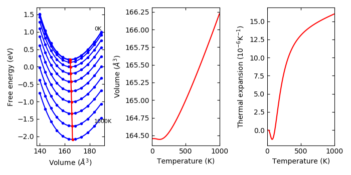
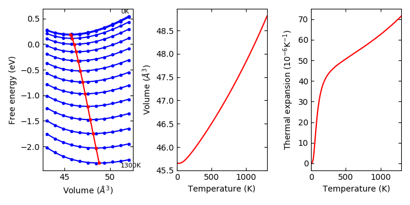

Quasi harmonic approximation#
Using phonopy results of thermal properties at several volumes, thermal
expansion and heat capacity at constant pressure can be calculated under the
quasi-harmonic approximation. Two interfaces are provided: the phonopy-qha
script described below, and the Python API Python API: run_qha,
which also computes lattice parameters as functions of temperature. The
theoretical background is summarized in Thermal properties in (T, p) space calculated under QHA.
Usage of phonopy-qha#
phonopy-qha is the script to run the fitting and calculations. Mind that at
least 5 volume points are needed for the fitting.
An example of the usage for example/Si-QHA is as follows.
To watch selected plots:
% phonopy-qha -p e-v.dat thermal_properties.yaml-{-{5..1},{0..5}}

Without plots:
% phonopy-qha e-v.dat thermal_properties.yaml-{-{5..1},{0..5}}
The first argument is the filename of volume-energy data (in the above example,
e-v.dat). The volumes and energies are given in \(\text{Angstrom}^3\) and
eV, respectively. These energies are only dependent on volume but not on
temperature unless using --efe option. Therefore in the simplest case, these
are taken as the electronic total energies at 0K. An example of the
volume-energy file is:
# cell volume energy of cell other than phonon
140.030000 -42.132246
144.500000 -42.600974
149.060000 -42.949142
153.720000 -43.188162
158.470000 -43.326751
163.320000 -43.375124
168.270000 -43.339884
173.320000 -43.230619
178.470000 -43.054343
183.720000 -42.817825
189.070000 -42.527932
Lines starting with # are ignored.
The following arguments of phonopy-qha are the filenames of
thermal_properties.yaml’s calculated at the volumes given in the volume-energy
file. These filenames have to be ordered in the same order as the volumes
written in the volume-energy file. Since the volume v.s. free energy fitting is
done at each temperature given in thermal_properties.yaml, all
thermal_properties.yaml’s have to be calculated in the same temperature ranges
and with the same temperature step. phonopy-qha can calculate thermal
properties at constant pressure up to the temperature point that is one point
less than that in thermal_properties.yaml because of the numerical
differentiation with respect to temperature points. Therefore
thermal_properties.yaml has to be calculated up to higher temperatures than
that expected by phonopy-qha.
Another example for Aluminum is found in the example/Al-QHA directory.
If the condition under pressure is expected, \(PV\) terms may be included in
the energies, or equivalent effect is applied using --pressure option.
Experimentally, temperature dependent energies are supported by --efe option.
The usage is written at
phonopy/phonopy.
Options#
-h#
Show help. The available options are shown. Without any option, the results are saved into text files in simple data format.
--tmax#
The maximum temperature calculated is specified. This temperature has to be
lower than the maximum temperature calculated in thermal_properties.yaml to
let at least one temperature points fewer. The default value is --tmax=1000.
--pressure#
Pressure is specified in GPa. This corresponds to the \(pV\) term described in the following section Thermal properties in (T, p) space calculated under QHA. Note that bulk modulus obtained with this option than 0 GPa is incorrect.
-b#
Fitting volume-energy data to an EOS, and show bulk modulus (without considering phonons). This is made by:
% phonopy-qha -b e-v.dat
--eos#
EOS is chosen among vinet, birch_murnaghan, and murnaghan. The default EOS
is vinet.
% phonopy-qha --eos='birch_murnaghan' -b e-v.dat
-p#
The fitting results, volume-temperature relation, and thermal expansion coefficient are plotted on the display.
-s#
The calculated values are written into files.
--sparse#
This is used with -s or -p to thin out the number of plots of the fitting
results at temperatures. For example with --sparse=10, 1 in 10 temperature
curves is only plotted.
--efe#
Experimental
Temperature dependent energies other than phonon free energy are included with this option. This is used such as:
% phonopy-qha -p --tmax=1300 --efe fe-v.dat e-v.dat thermal_properties.yaml-{00..10}

The temperature dependent energies are stored in fe-v.dat. The file format is:
# volume: 43.08047896 43.97798894 44.87549882 45.77300889 46.67051887 47.56802885 48.46553883 49.36304881 50.26055878 51.15806876 52.05557874
# T(K) Free energies
0.0000 -17.27885993 -17.32227490 -17.34336569 -17.34479760 -17.32843604 -17.29673896 -17.25081954 -17.19263337 -17.12356816 -17.04467997 -16.95752155
10.0000 -17.27886659 -17.32228126 -17.34337279 -17.34481060 -17.32844885 -17.29675204 -17.25083261 -17.19264615 -17.12358094 -17.04469309 -16.95753464
20.0000 -17.27887453 -17.32228804 -17.34338499 -17.34482383 -17.32846353 -17.29676491 -17.25084547 -17.19265900 -17.12359399 -17.04470709 -16.95754774
...
The first column gives temperatures in K and the following columns give
electronic free energies in eV at temperatures and at unit (primitive) cell
volumes. The lines starting with # are ignored. This file doesn’t contain the
information about cell volumes. Instead, the volumes are obtained from e-v.dat
file. The energies in e-v.dat are not used when --efe option is used. The
temperature points are expected to be the same as those in
thermal_properties.yaml at least up to the maximum temperature specified for
phonopy-qha.
An example is given in example/Cu-QHA. The fe-v.dat contains electronic free
energy calculated following, e.g., Eqs. (11) and (12) in the paper by Wolverton
and Zunger, Phys. Rev. B, 52, 8813 (1994) (of course this paper is not the
first one that showed these equations):
with
and
where \(g\) is 1 or 2 for collinear spin polarized and non-spin polarized
systems, respectively. For VASP, a script to create fe-v.dat and e-v.dat by
these equations is prepared as phonopy-vasp-efe, which is used as:
% phonopy-vasp-efe --tmax=1500 vasprun.xml-{00..10}
where vasprun.xml-{00..10} have to be computed for the same unit cells as
those used for thermal_properties.yaml. When phonopy was run with
PRIMITIVE_AXES or --pa option, the unit cells for computing electronic
eigenvalues have to be carefully chosen to agree with those after applying
PRIMITIVE_AXES, or energies are scaled a posteriori.
Note that with --efe, the electronic free energies enter the fitting of
\(F(V;T)\) and therefore the equilibrium volumes, thermal expansion,
Gibbs free energy, bulk modulus, and Cp-temperature.dat computed by
\(-T\partial^2 G/\partial T^2\) include the electronic contributions.
However, Cp-temperature_polyfit.dat and gruneisen-temperature.dat are
computed from the phonon-only \(C_V\) and \(S\), i.e., the
electronic entropy and heat capacity are not included there. Use
Cp-temperature.dat for the heat capacity in this case. The Python API
(see Electronic free energies from eigenvalues) includes the electronic
contributions in both quantities instead.
Output files#
The physical units of V and T are \(\text{Angstrom}^3\) and K, respectively. The unit of eV for Helmholtz and Gibbs energies, J/K/mol for \(C_V\) and entropy, GPa for bulk modulus and pressure are used.
Bulk modulus \(B_T\) (GPa) vs \(T\) (
bulk_modulus-temperature.*)Gibbs free energy \(G\) (eV) vs \(T\) (
gibbs-temperature.*)Heat capacity at constant pressure \(C_p\) (J/K/mol) vs \(T\) computed by \(-T\frac{\partial^2 G}{\partial T^2}\) from three \(G(T)\) points (
Cp-temperature.*)Heat capacity at constant pressure \(C_p\) (J/K/mol) vs \(T\) computed by polynomial fittings of \(C_V(V)\) (
Cv-volume.dat) and \(S(V)\) (entropy-volume.dat) for \(\partial S/\partial V\) (dsdv-temperature.dat) and numerical differentiation of \(\partial V/\partial T\), e.g., see Eq.(5) of PRB 81, 174301 by Togo et al. (Cp-temperature_polyfit.*). This may give smoother \(C_p\) than that from \(-T\frac{\partial^2 G}{\partial T^2}\).Volumetric thermal expansion coefficient \(\beta\) vs \(T\) computed by numerical differentiation (
thermal_expansion.*)Volume vs \(T\) (
volume-temperature.*)Thermodynamics Grüneisen parameter \(\gamma = V\beta B_T/C_V\) (no unit) vs \(T\) (
gruneisen-temperature.dat)Helmholtz free energy (eV) vs volume (
helmholtz-volume.*). When--pressureoption is specified, energy offset of \(pV\) is added. See also the following section (Thermal properties in (T, p) space calculated under QHA).
Python API: run_qha#
Warning
This API is experimental. The function and class names, arguments, and return values described in this section may change in future releases without the usual deprecation process.
phonopy.run_qha is the successor of the deprecated PhonopyQHA class. It
takes one Phonopy instance per volume point (with force constants set),
computes mesh sampling and thermal properties internally on a given
temperature grid, fits the total free energy to an equation of state at each
temperature, and returns an immutable QHAResult dataclass. File writers
live in phonopy.qha.output and plotting functions in phonopy.qha.plot;
both take a QHAResult as the first argument.
import numpy as np
import phonopy
from phonopy import run_qha
from phonopy.qha.output import (
write_lattice_parameters_temperature,
write_volume_temperature,
)
from phonopy.qha.plot import plot_qha
phonopys = [phonopy.load(f"phonopy_params-{i:02d}.yaml") for i in range(11)]
internal_energies = np.loadtxt("e-v.dat")[:, 1] # eV, one per volume
temperatures = np.arange(0, 1101, 10)
result = run_qha(phonopys, temperatures, internal_energies, mesh=100.0)
print(result.equilibrium_volumes) # V(T)
write_volume_temperature(result) # volume-temperature.dat
if result.lattice is not None:
write_lattice_parameters_temperature(result)
plot_qha(result).show()
Remarks:
temperaturesmust be strictly ascending. One temperature point is consumed by the numerical differentiations, so supply one more point than the temperature range of interest. All temperature-indexed arrays ofQHAResultshare the same length.internal_energiesare the static internal energies \(U(V)\) other than the phonon free energy in eV with shape(volumes,), e.g., electronic total energies from first-principles calculations or potential energies from machine learning potentials. All energies and volumes ofrun_qharefer to the primitive cell, to which the phonon thermal properties are normalized. Temperature dependence of the electronic system is supported throughelectronic_structures(see Electronic free energies from eigenvalues); temperature-dependent free-energy arrays likefe-v.datare not accepted.pressure(GPa) andeos(vinet,birch_murnaghan,murnaghan) work as inphonopy-qha.\(C_p\) is computed by the polynomial-fitting method (see Output files) and is available as
result.heat_capacity_P.heat_capacities. The \(-T\partial^2 G/\partial T^2\) variant of the legacy API is not provided.The file formats written by
phonopy.qha.outputare identical to those ofphonopy-qhafor the shared quantities.
Electronic free energies from eigenvalues#
Instead of preparing a fe-v.dat file with phonopy-vasp-efe and the
--efe option of phonopy-qha, the same electronic free energies can be
computed inside run_qha by supplying the electronic states at each volume
point as ElectronicStates (eigenvalues in eV with shape
(spin, kpoints, bands), relative k-point weights, and the number of
electrons per unit cell):
from phonopy.interface.vasp import parse_vasprunxml
from phonopy.qha.electron import ElectronicStates
electronic_structures = []
for i in range(11):
vxml = parse_vasprunxml(f"vasprun.xml-{i:02d}")
electronic_structures.append(
ElectronicStates(
eigenvalues=vxml.eigenvalues[:, :, :, 0],
weights=vxml.k_weights,
n_electrons=vxml.NELECT,
volume=vxml.volume[-1],
internal_energy=vxml.energies[-1, 1], # energy (sigma -> 0)
)
)
result = run_qha(
phonopys, temperatures, electronic_structures=electronic_structures
)
Since the electronic states carry the volumes and the static internal
energies, internal_energies may be omitted (an explicitly given array
takes precedence); the volumes are also used for a consistency check
against the primitive cell volumes of phonopys.
The electronic free energies
\(F_\text{el}(T, V) = U(V) + f_\text{el}(T; V) - f_\text{el}(0; V)\)
are computed within the fixed density-of-states (Mermin) approximation with
the temperature-dependent chemical potential conserving the number of
electrons (see --efe for the equations). This is
intended for metals, i.e., the chemical potential is assumed not to lie in
a band gap. The electronic entropies are obtained analytically and the
electronic heat capacities by a single numerical differentiation; both
enter \(C_p\) and the Grüneisen parameters. Note that the deprecated
PhonopyQHA computed the Grüneisen parameters with the phonon-only
\(C_V\) and \(C_p\) was unavailable in this case, so these
quantities differ from the legacy values where the electronic heat capacity
is significant. The eigenvalues are not restricted to VASP; any code that
provides eigenvalues, k-point weights, and the number of electrons can be
used.
For VASP, the collection above can also be done once with
% phonopy-vasp-efe --es vasprun.xml-{00..10}
(--es is short for --write-electronic-states)
which writes electronic_states.hdf5 containing the electronic states
together with the volumes and the static energies (sigma->0) of all volume
points, instead of computing fe-v.dat. The eigenvalues must be computed
for the primitive cell (see the remark on PRIMITIVE_AXES in
--efe). The volumes stored with the electronic
states are checked against the primitive cell volumes of phonopys by
run_qha, which protects against ordering mistakes. The file is loaded
with read_electronic_states_hdf5:
from phonopy.qha.electron import read_electronic_states_hdf5
electronic_structures = read_electronic_states_hdf5("electronic_states.hdf5")
result = run_qha(
phonopys, temperatures, electronic_structures=electronic_structures
)
Lattice parameters a(T), b(T), c(T)#
Note
The setting assumed here is that the structures of the volume series were prepared by relaxing the cell shape under hydrostatic pressures (or equivalently at fixed volumes) using the static total energy only – without the phonon contribution – e.g., by first-principles calculations or machine learning potentials, so that the axial ratios may vary along the volume series, e.g., \(c/a\) of a hexagonal crystal changing with volume. This feature does not optimize \(a\), \(b\), \(c\) with the phonon contribution included: the cell shape at each volume is fixed to the input shape and the phonon free energy optimizes the volume alone, i.e., the cell shape is a function of volume determined by the static total energy. An anisotropic QHA that minimizes \(F(a, b, c;\,T)\) in the full lattice-parameter space is a different calculation and is beyond the scope of this feature.
Since each Phonopy instance carries its unit cell, the lattice parameters
at each volume point are known. run_qha propagates their volume
dependence to temperature through the equilibrium volumes \(V_0(T)\),
giving \(a(T)\), \(b(T)\), \(c(T)\) with generally anisotropic
thermal expansion.
The cell volume is modeled as \(V = k\,abc\), where \(a\),
\(b\), \(c\) are the lattice-vector lengths of the input unit
cells and \(k\) is a geometric constant containing the cell-angle
factor. Since \(V\) is the primitive cell volume, \(k\) also
absorbs the unit-cell to primitive-cell volume ratio. \(k\) is
determined from the input cells and no crystal-system flag is needed:
cubic cells simply give constant axial ratios and hexagonal cells give
\(b = a\). The axial ratios \(b/a\) and \(c/a\) are fitted as
polynomials of \(V\) (degree lattice_fit_degree, default 2), and the
lattice parameters are recovered so that \(k\,a(V)\,b(V)\,c(V) = V\)
holds exactly. Evaluating them at the equilibrium volumes
\(V_0(T)\) gives \(a(T)\), \(b(T)\), \(c(T)\), and the
linear thermal expansion coefficients
\(\alpha_a = (1/a)\,\mathrm{d}a/\mathrm{d}T\) etc. follow by central
differences, satisfying \(\alpha_a + \alpha_b + \alpha_c = \beta\).
The model requires the cell angles to be independent of volume. For
triclinic and monoclinic crystals, where cell angles are free parameters,
lattice-parameter fitting is therefore skipped with a warning and
result.lattice is None (the crystal system is determined from the
symmetry of the input cells). In addition, the constancy of \(k\) over
the volume points is verified, and the fitting is also skipped when this
check fails. This happens when the unit cells are given in a setting whose
angles vary with volume even though the crystal system is compatible, for
example rhombohedral primitive cells, or fcc primitive cells of a crystal
strained along a conventional axis; give the unit cells in a fixed-angle
setting such as the conventional cell in such cases.
The results are stored in result.lattice (QHALatticeData):
lattice_parameters with shape (temperatures, 3),
axial_thermal_expansions with shape (temperatures, 3), k, and
ratio_coefficients. The corresponding output files are
lattice_parameters-temperature.dat (columns \(T\), \(a\),
\(b\), \(c\)) by write_lattice_parameters_temperature and
axial_thermal_expansion.dat (columns \(T\), \(\alpha_a\),
\(\alpha_b\), \(\alpha_c\), \(\alpha_a+\alpha_b+\alpha_c\)) by
write_axial_thermal_expansion. The plotting counterparts are
plot_lattice_parameters and plot_axial_thermal_expansion.
Migration from PhonopyQHA (deprecated)#
The PhonopyQHA class is deprecated and will be removed in a future major
release. The correspondence between the legacy attributes and the new API
is:
|
New API |
|---|---|
|
|
|
|
|
|
|
|
|
|
|
not provided (use |
|
|
|
|
|
functions in |
|
functions in |
|
|
Behavioral differences: run_qha does not accept temperature-dependent
electronic free-energy arrays (the fe-v.dat style input of the legacy
API); supply electronic_structures instead (see
Electronic free energies from eigenvalues). With the electronic
contributions included there, QHAResult.gruneisen_parameters and
heat_capacity_P differ from the legacy behavior, where the Grüneisen
parameters used the phonon-only \(C_V\) and the polyfit \(C_p\)
was unavailable.
Thermal properties in (T, p) space calculated under QHA#
Here the word ‘quasi-harmonic approximation’ is used for an approximation that introduces volume dependence of phonon frequencies as a part of anharmonic effect.
A part of temperature effect can be included into total energy of electronic structure through phonon (Helmholtz) free energy at constant volume. But what we want to know is thermal properties at constant pressure. We need some transformation from function of V to function of p. Gibbs free energy is defined at a constant pressure by the transformation:
where
means to find unique minimum value in the brackets by changing volume. Since volume dependencies of energies in electronic and phonon structures are different, volume giving the minimum value of the energy function in the square brackets shifts from the value calculated only from electronic structure even at 0 K. By increasing temperature, the volume dependence of phonon free energy changes, then the equilibrium volume at temperatures changes. This is considered as thermal expansion under this approximation.
phonopy-qha and run_qha collect the values at volumes and transform them
into the thermal properties at constant pressure.